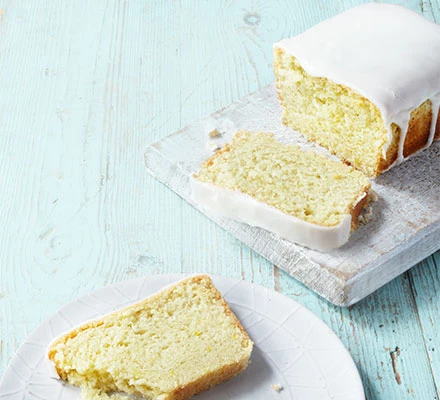

Lemon Cake

Description
Try baking a vegan version of lemon cake. Light and zingy, it also works well if you replace the flour and baking powder with gluten-free alternatives.
Preparation time: 15 mins
Cooking time: 30 mins
Serves: 12
Ingredients
For the icing
- 150g icing sugar
- ½ lemon, juiced
For the cake
- 100ml vegetable oil, plus extra for the tin
- 275g self-raising flour
- 200g golden caster sugar
- 1 tsp baking powder
- 1 lemon, zested, 1/2 juiced
Steps
- Heat oven to 200C/180C fan/gas 6. Oil a 1lb loaf tin and line it with baking parchment. Mix the flour, sugar, baking powder and lemon zest in a bowl. Add the oil, lemon juice and 170ml cold water, then mix until smooth.
- Pour the mixture into the tin. Bake for 30 mins or until a skewer comes out clean. Cool in the tin for 10 mins, then remove and transfer the cake to a wire rack to cool fully.
- For the icing, sieve the icing sugar into a bowl. Mix in just enough lemon juice to make an icing thick enough to pour over the loaf (if you make the icing too thin, it will just run off the cake).